Pankaj Sharma est née à Jaipur, la capitale du Rajasthan. Lorsqu'elle s'installe en France, elle se trouve confrontée à des habitudes alimentaires très différentes des siennes et découvre qu'être végétarienne, à l'inverse de l'Inde, c'est appartenir à une minorité. Soucieuse d'affirmer et de faire partager la richesse de cet héritage tant familial que culturel, elle crée un blog de recettes indiennes végétariennes qui a un vif succès. Aujourd'hui elle démontre, avec simplicité et gourmandise, qu'il existe une Cuisine végétarienne avec une histoire et un avenir.
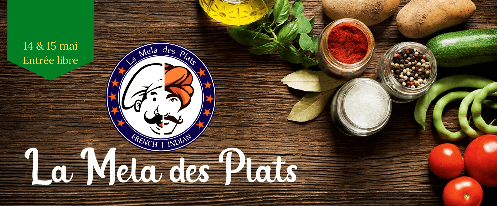
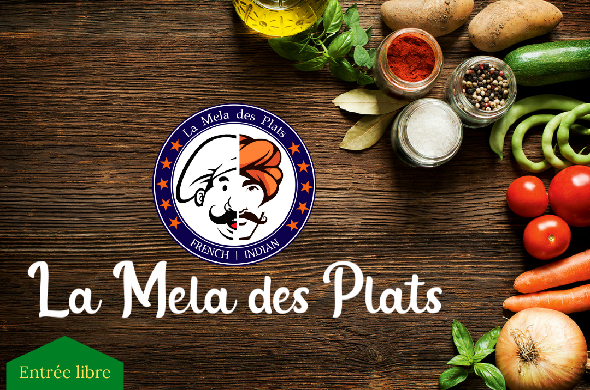
Comment pouvez-vous consommer des produits locaux et de saison lorsque vous êtes un gourmet ? A travers une rencontre entre producteurs locaux et experts de la cuisine indienne, cet évènement sur deux jours permettra à chacun de découvrir de nouvelles pratiques culinaires inspirées de la tradition indienne.
Sample
Qu’est-ce que La Mela des Plats (LMDP) ?
« La Mela des Plats » est un évènement proposé par l’Association de la Communauté Indienne de Toulouse (ICT), durant le week-end des fêtes organisées en Inde au moment des récoltes. C’est une invitation à découvrir la cuisine indienne, dans le contexte plus général de la culture de notre pays. Ce projet a remporté le concours « L’Occitanie ouverte sur le monde », organisé par la Région Occitanie. Il est soutenu par la Région.
Ce sera la fête des papilles, à travers un voyage exotique au cœur des cuisines de l’Inde et de ses bienfaits pour la santé.
Nous remercions tous ceux qui ont voté pour les gagnants du concours Occitanie ouverte sur le monde - 2020. Nous remercions la région Occitanie de nous avoir donné l’opportunité d’organiser ce festival international de gastronomie.
-
Une occasion à ne pas manquer pour :
- découvrir la cuisine indienne et le savoir-faire de ses cuisiniers !
- rencontrer d’autres traditions et une autre culture !
- vous amuser en participant à la célébration de festivals indiens
- vivre un week-end mémorable ! Ne tarder pas à vous faire connaître !
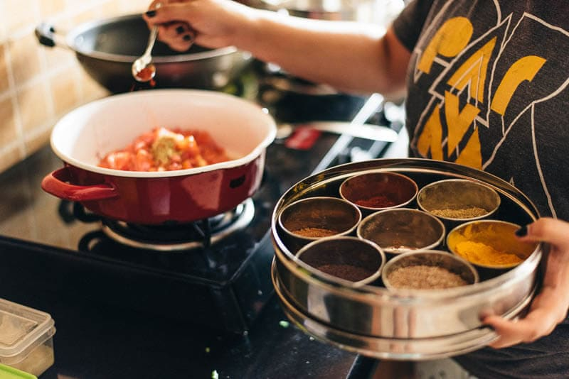
14
mai
Atelier de Cuisine
plus d'infos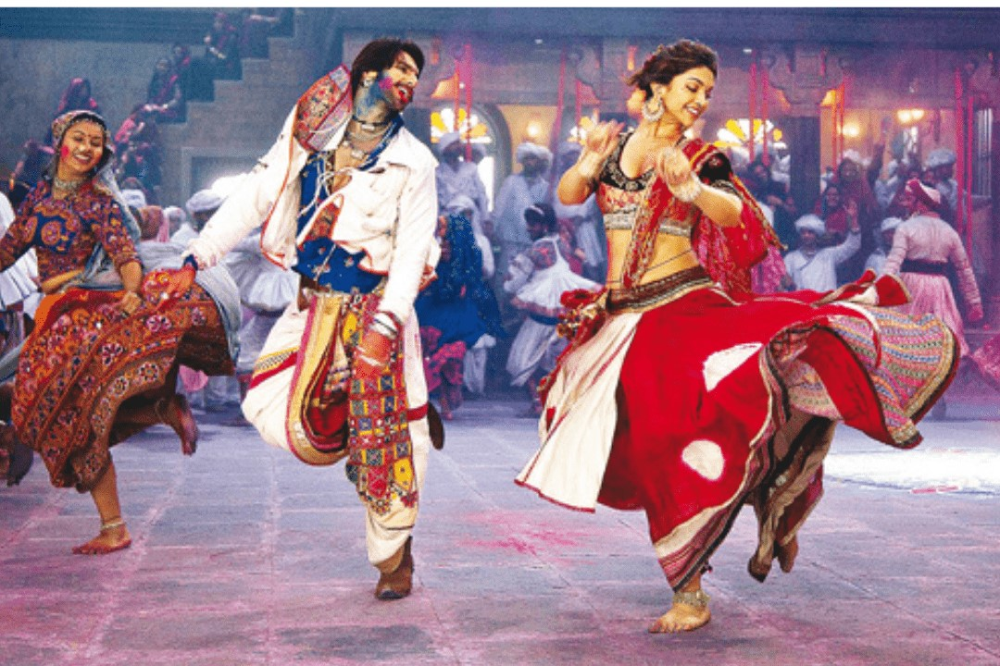
14
mai
Atelier Bollywood
plus d'infos
15
mai
Atelier de Yoga
plus d'infosSample
Le programme
Ce week-end festif sera l’occasion de découvrir l’art culinaire et les traditions médicinales de l’Inde et de comprendre comment les utiliser au quotidien. Vous pourrez goûter différents plats authentiques de l’Inde, qui peuvent se préparer facilement, en utilisant les légumes et les produits disponibles localement. Et ceci, tout en vous immergeant dans les couleurs et la musique de l’Inde.
Vous trouverez sur place, dans une ambiance de marché, des stands alimentaires, artisanaux, associatifs, une aire de jeux pour les enfants et des activités culturelles.
Au cours de ces deux journées, vous pourrez assister à des ateliers, des conférences sur l’alimentation et le yoga, voir des films, des expositions, faire des achats, participer à diverses festivités. Vous pourrez ainsi découvrir la culture indienne, échanger avec les Indiens résidant en France et découvrir leur mode de vie.
Artistes
Pankaj Sharma
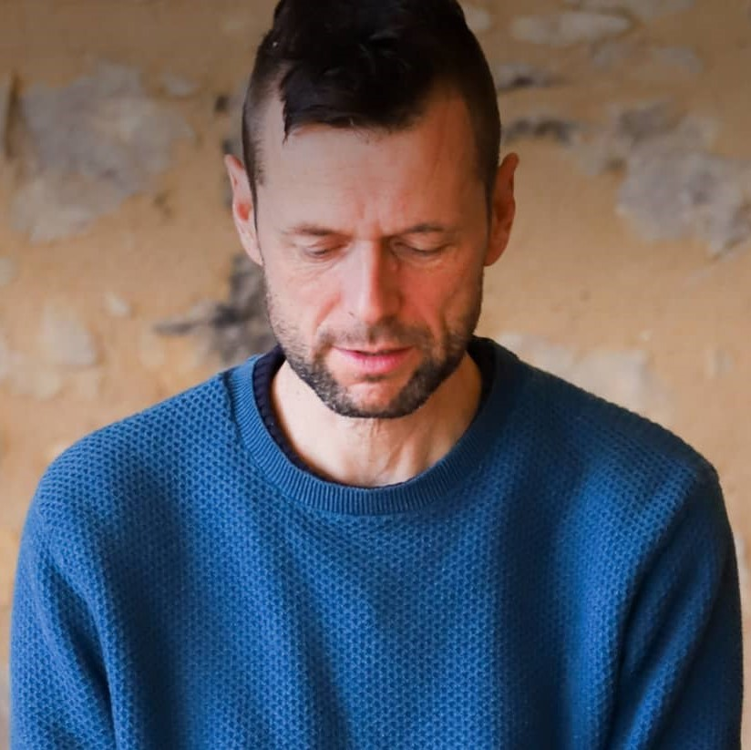
Depuis 2009, Didier Haberli et Udana-Ayurveda offrent des retraites ayurvédiques en Ariège et des stages de découverte de l'Ayurveda. Après avoir passé 9 ans à donner des massages et consultations à Toulouse, il se consacre exclusivement à l'accompagnement sur des temps plus longs et à l'enseignement de l'Ayurveda. A la demande, il peut proposer des conférences sur des thèmes précis (Pancha Karma, alimentation, gestion des doshas, etc...).
Didier Haberli
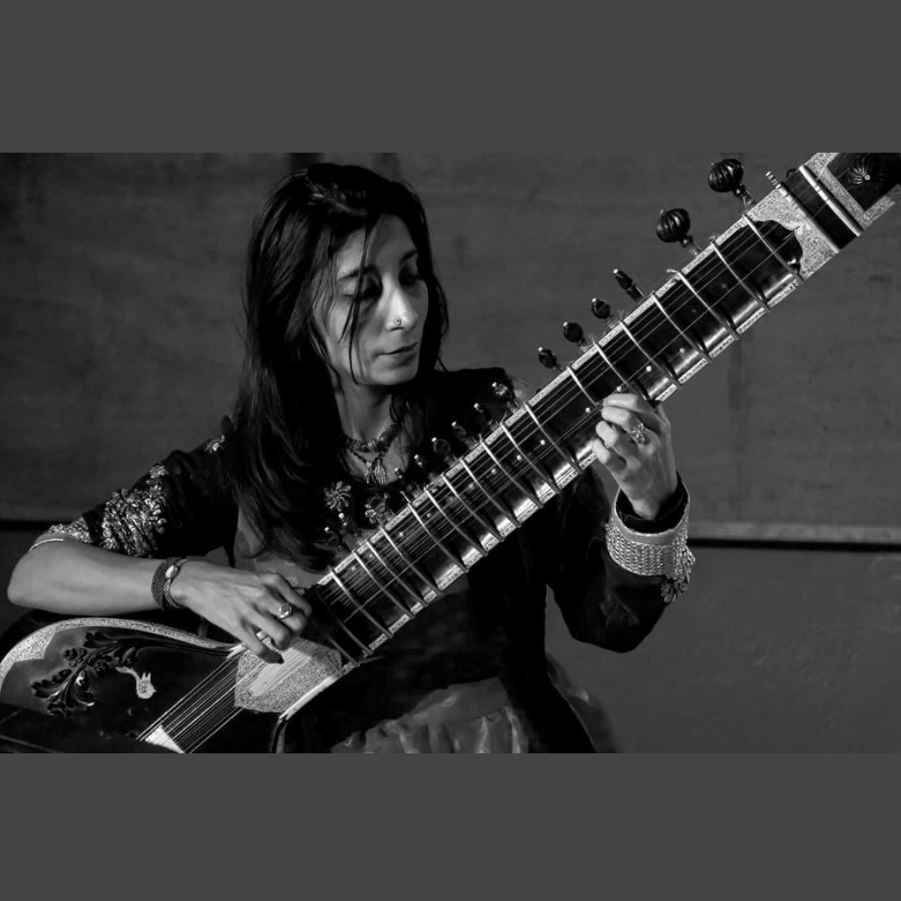
Joyeeta Sanyal est actuellement considérée comme l’une des plus talentueuses jeunes joueuses de sitar sur la scène internationale. Elle possède un style personnel très créatif, captivant, faisant jaillir de son sitar toute une alchimie, puisant dans des profondeurs magnétiques suivies d’envolées des plus dynamiques.
Joyeeta Sanyal
Bernard Margarit a commencé à jouer de la guitare à l’âge de 11 ans et a rapidement étudié la guitare classique au conservatoire de Toulouse. Il a eu une carrière diversifiée, entre tournées, enregistrements en studio et émissions de télévision, notamment avec des Rock Stars françaises, dont Johnny Hallyday. Il a participé à de nombreux projets à travers le monde avec des groupes comme Ganapathi (Inde), Raw Material (Royaume-Uni), Vinx (USA) Il participle régulièrement à différents projets avec des musiciens indiens
Bernard Margarit
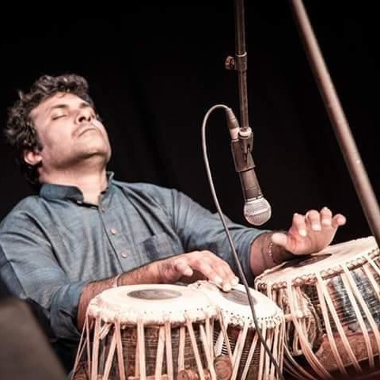
Debojyoti Sanyal est immergé dans la musique dès l’enfance. L’artiste a étudié le tabla de manière très rigoureuse et a reçu ses premiers cours d’abord de son défunt père, Amelendu Sanyal, puis de différents maîtres du tabla. Il a une merveilleuse habileté à mettre en valeur les subtilités du tabla tout en jouant avec vitesse et intensité. Il sait s'adapter à toutes les situations musicales en ajoutant, chaque fois, sa propre touche créative, que le style de musique soit d’origine Orientale ou Occidentale. Ces dernières années, Debajyoti a énormément voyagé. Il donne des concerts classiques et dispense des cours mais participe également à divers projets de musique du monde.
Debojyoti Sanyal
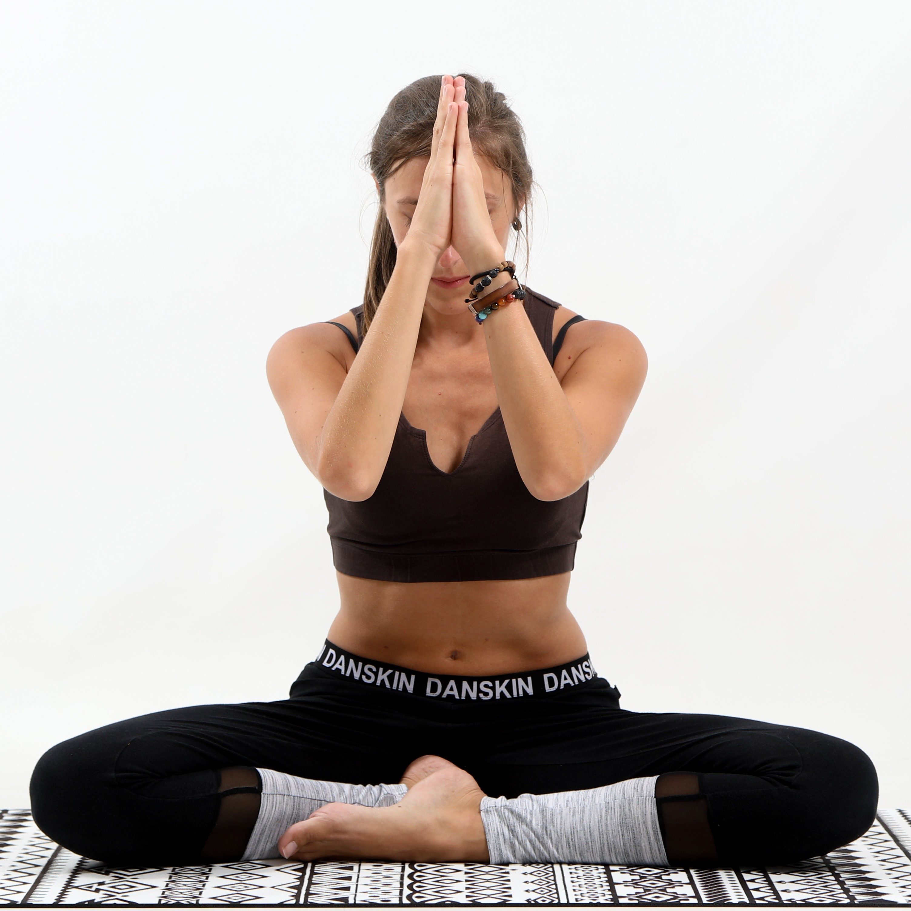
Fanny Asseman est psychologue et professeur de yoga certifiée. Depuis quelques années, elle partage avec passion mon expérience de la yogathérapie pour vous accompagner dans l'exploration et l'affirmation du potentiel qui est en vous et de votre bien-être quotidien. N°ADELI : 329302913
Fanny Asseman
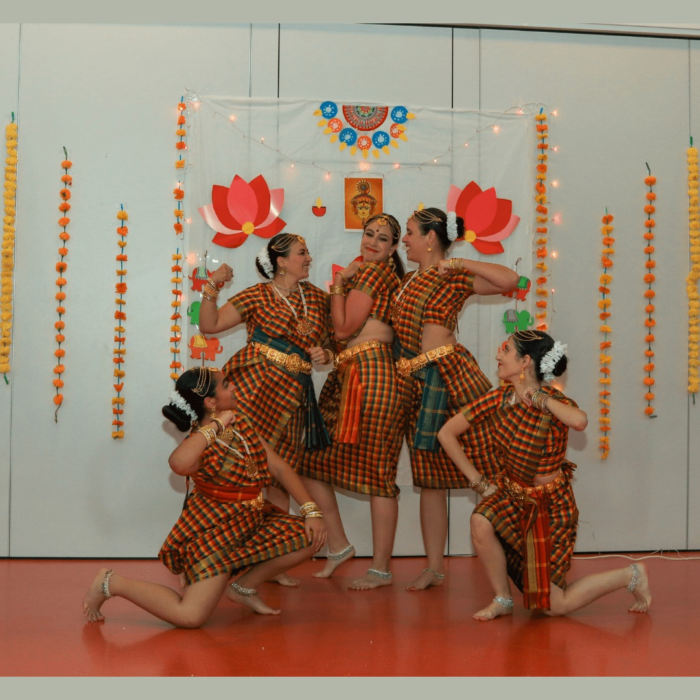
Les Perles de Jaffna est une troupe de danse indienne basée à Toulouse. Depuis 2011, ils dansent sur les rythmes des plus grandes chansons de Bollywood avec pour objectif de découvrir, transmettre et promouvoir la richesse des cultures indiennes et sri-lankaises. Cette équipe dynamique participe à de nombreux événements publics et privés à travers la région Occitanie, Paris, Londres, Madrid et la Suisse ! Ils sont régulièrement associés à des événements humanitaires et solidaires.
Perles de Jaffna
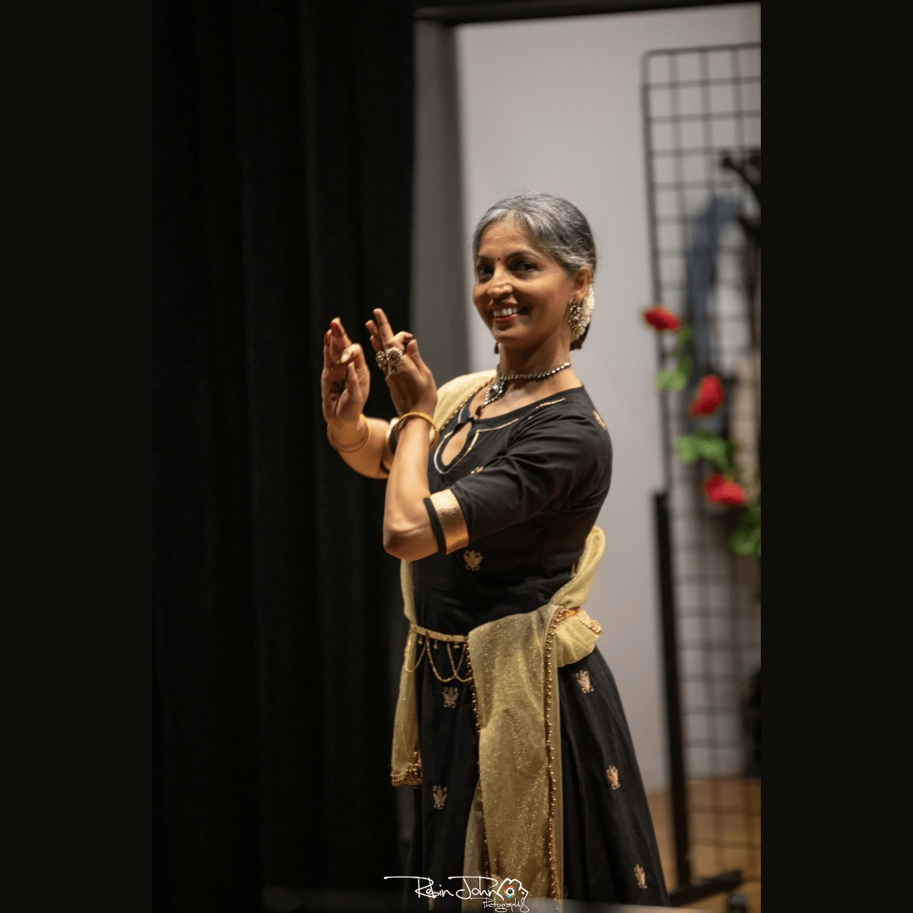
Poornima Bidesi est une danseuse formée aux danses classiques du sud et du nord de l’Inde. Elle a commencé à s’entraîner dès l’âge de 7 ans, avec des pauses pour suivre ses études et sa vie professionnelle et privée. Il y a 8 ans, elle s’est engagée dans l’apprentissage de la danse Kathak, auprès de 3 enseignants différents. Elle a repris activement cette formation en Kathak depuis plus de deux ans maintenant. Son maître est Smt. JONAKI Raghavan, un maestro Kathak très renommé, de Bombay en Inde.
Poornima Bidesi
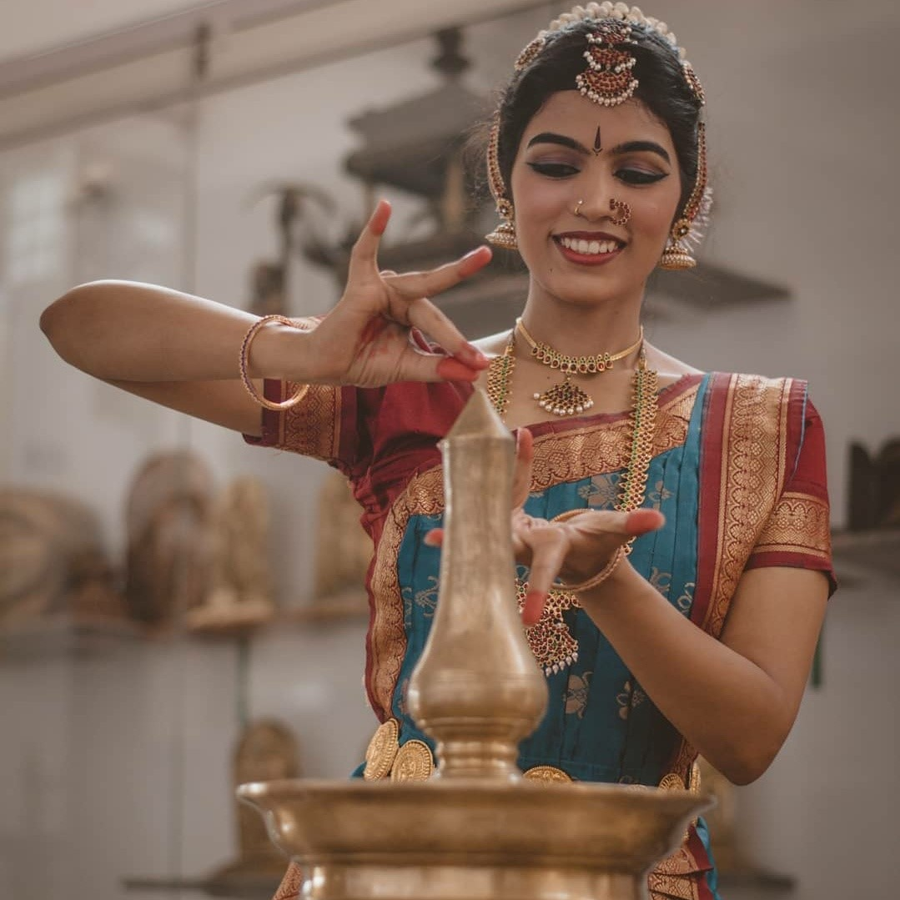
Vaishnavi Bhatt est une danseuse professionnelle de Bharata Natyam, originaire de la ville de Shimoga, dans le sud de l’Inde. Elle a débuté son parcours de danseuse à l’âge de 9 ans. Depuis 17 ans, elle poursuit son apprentissage et l’approfondissement de son art, dans une quête perpetuelle d’enrichissement et d’épanouissement. Elle s’intéresse aussi tout particulièrement à l’architecture des temples indiens et aux mudras (mouvements des mains) du Nritha Hastas.
Vaishnavi Bhatt
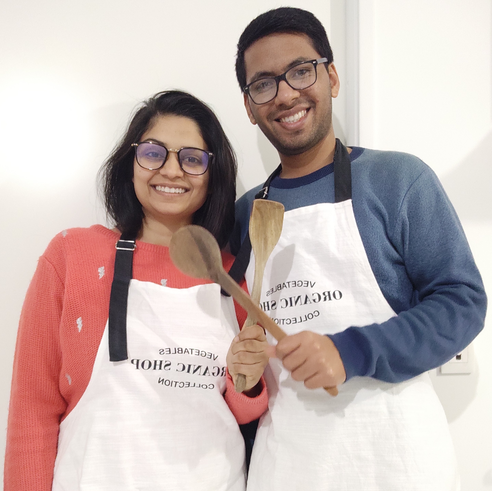
Shubham Jain et Surbhi Jain sont un couple Indien qui habite à Toulouse. Ils ont végétarien, qui les a encouragé d'apprendre cuisiner de ses mères, et ils ont reçu les retours positives des amis. Après avoir fait face à manque des options végétariens dans les restaurants, ils ont commencé leur atelier de cuisine Indienne. Ils ont animé 15+ ateliers sous Airbnb Experiences, tous avec les excellentes notes.
Shubham et Surbhi
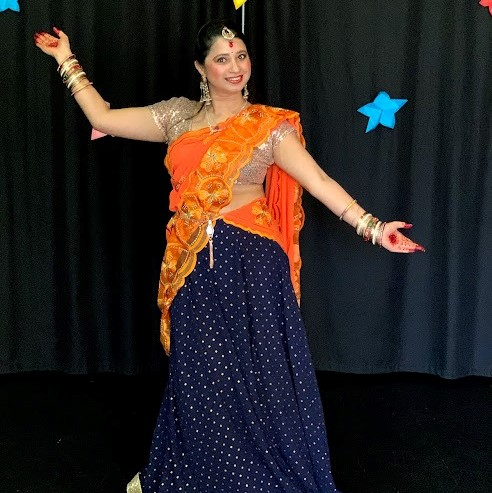
Avec une passion pour la danse et une expérience de plusieurs années dans des événements de danse et des cours de danse professionnels. Elle est également professeur de danse Bollywood à Marie et a animé des ateliers Bollywood pour les Français intéressés par la danse et la culture indienne.
Shikha Sharma
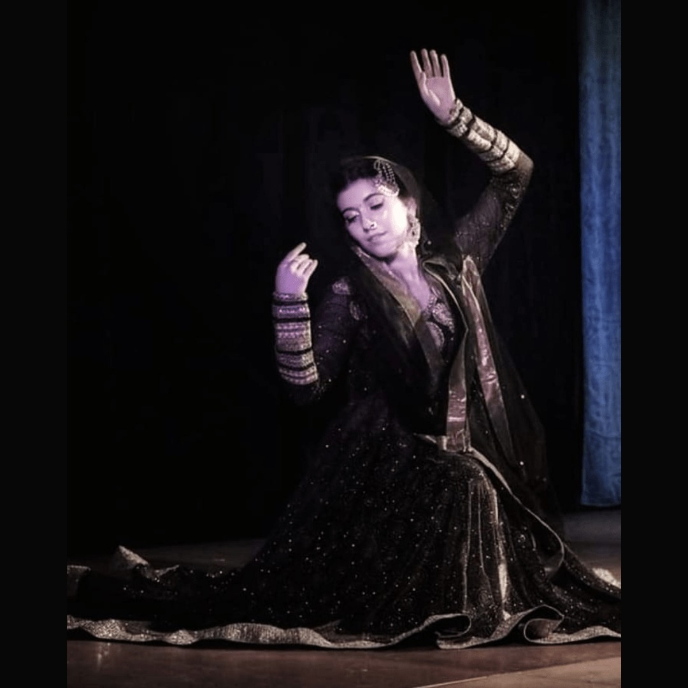
Pyrène Rieu a découvert la culture Desi à travers des films à l’âge de 11 ans, ce qui lui a donné l’envie d’apprendre à danser. D’abord dans sa chambre, en répétant les mouvements qu’elle avait vus dans les films. Puis en suivant des cours et en participant à des ateliers de danse (Kathak, Bharata Natyam,..). Cette formation diversifiée lui a permis d’explorer les différents styles de danse et de repérer les influences qu’elle voulait intégrer à sa propre danse. Elle souhaite simplement partager la danse qui la rend heureuse et offrir un petit moment de bonheur, suspendu dans le temps.
Pyrène Rieu
Gargi Saha est une chanteuse classique hindusthani formée, originaire de Kolkata, en Inde. Elle s'est produite et a été acclamée sur des plateformes musicales prestigieuses, notamment dans un programme télévisé régional à Kolkata en tant qu'enfant artiste. Elle est restée l'un des membres et contributeurs de l'association BHOOMI de Lisbonne, au Portugal, en collaboration avec l'ambassade de l'Inde au Portugal. Outre son côté musical, elle est également collaboratrice de recherche à l'Université de Minho, Braga, Portugal, et s'intéresse vivement à la rédaction d'articles et à la présentation de documents sur diverses questions sociologiques, dont certains ont été publiés.
Gargi Saha

Suparabha est originaire d'une petite ville, Puttur, dans le sud de l'Inde. Inspirée par sa mère qui est musicienne et joue de l'harmonium, Suprabha a commencé à apprendre la musique vocale carnatique à l'âge de 10 ans. Elle a également appris la musique hindustani pendant 2 ans. Elle a donné des représentations de chant lors de plusieurs événements en Inde du Sud et en France. Elle est ingénieur système de profession et vit à Toulouse.
Suprabha Kini
Sagar est un ingénieur aérospatial qui travaille à Toulouse. Il est flûtiste amateur et a appris la flûte hindoustani (Bansuri) pendant 3 ans en Inde. Il est un fervent amateur de cricket et aime voyager
Sagar Shenoy
Agenda
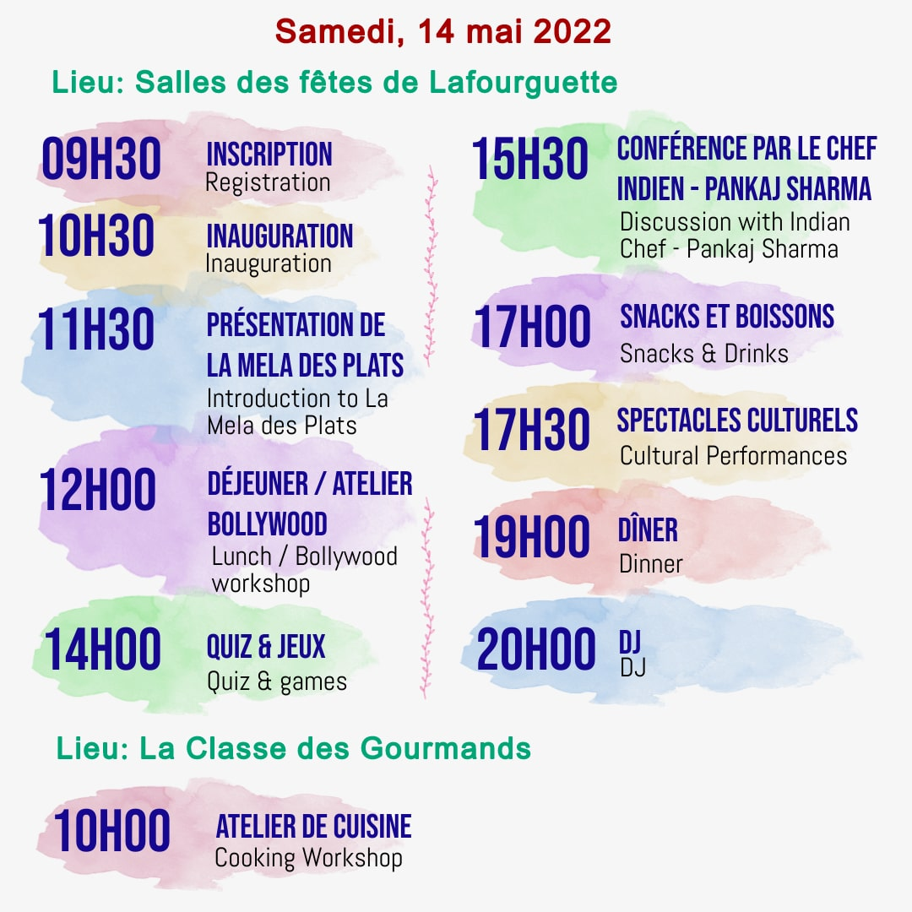
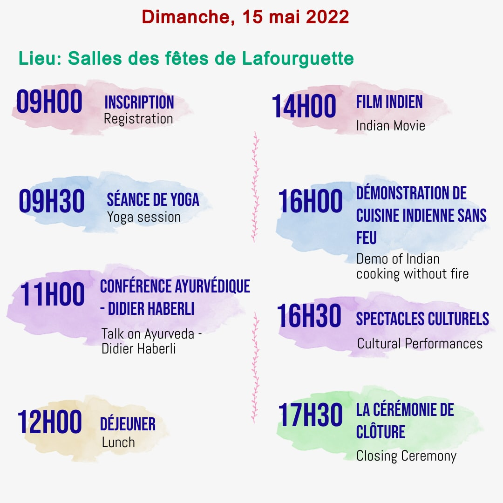
Vous êtes déjà partenaire, vous êtes un traiteur, un professionnel de l’alimentation, et vous souhaitez nous aider ?
“La Mela Des Plats” est un événement gastronomique d’un week-end dans la Région Occitanie, dont nous souhaitons faire un beau succès populaire.
Nous sommes toujours en recherche de tout type de soutien pour faire de cet événement un réel succès. N’hésitez pas, nous vous en remercions, à contribuer, à votre niveau, au succès de cette manifestation gastronomique et interculturelle.
Pour participer, merci de remplir ce formulaire !
Informations pratiques
Lieu
Salle des fêtes de Lafourguette
28 Rue de Gironis, 31100 Toulouse
L4 (arrêt Place des Glières)
A62 & A64
Atelier de cuisine
La Classe des Gourmands
Port de l’embouchure, 31200 Toulouse
Collaborations
Organisateurs

Célébrer

Avec la collaboration de

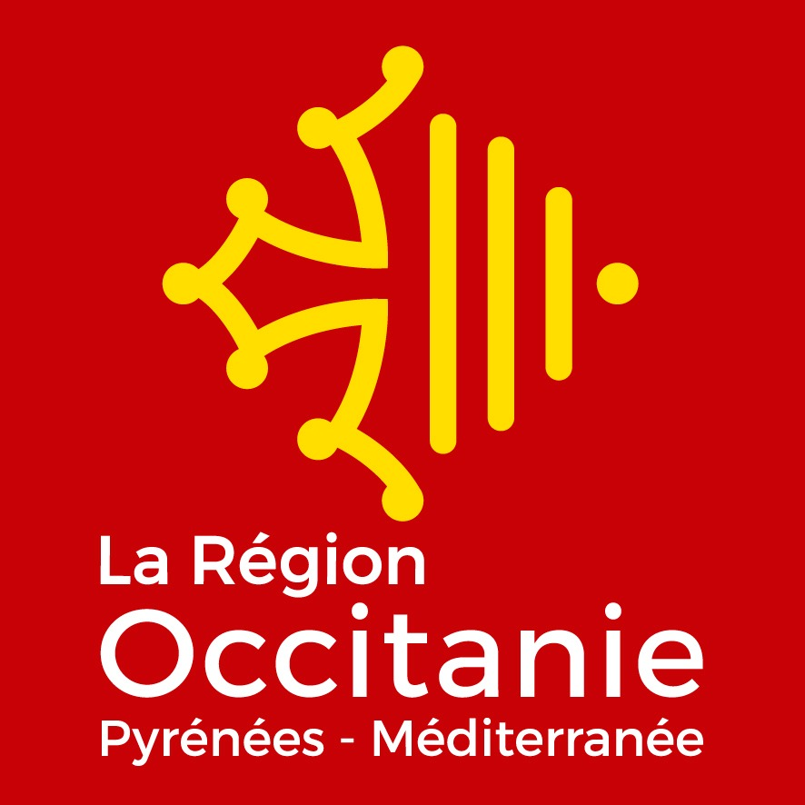


Partenaires
How can you eat local and seasonal food when you are a gourmet? Through a meeting between local producers and experts in Indian cuisine, this two day event will allow everyone to discover new cooking methods inspired by Indian tradition.
Sample
What is LMDP ?
"La Mela des Plats" is a food-culture based event organised by Association Indian Community Toulouse over the weekend of Harvest festivals in India. It is one of the winners of the competition "L'Occitanie ouverte sur le monde" organised by the Occitanie region of France, and hence supported the region.
This event focuses on taking your taste buds on an exotic journey around the cusines of India and benefits on lifestyle.
We thank everyone who voted us the winners of the competition Occitanie ouverte sur le monde - 2020. We thank the region Occitanie for giving us the opportunity for conducting this international food festival.
- Do you want to experience Indian food and it’s cuisine from the cooks?
- Do you want to collaborate with different Traditions and Culture?
- Do you want to celebrate Indian Festivals and have fun?
- Do you want to have a memorable weekend? Hurry up!
14
May
Cooking workshop
Know more
14
May
Bollywood workshop
Know more
15
May
Yoga workshop
Know moreSample
What is in the Programme?
This festive weekend will be an opportunity to discover the culinary art and medicinal traditions of India and to understand how to use them in everyday life. Taste different authentic dishes from India that are easily made using the locally available vegetables and produces; while immersing yourself in the colors & music of India.
Food stands, associations, market place, play area for children, cultural activities all in one place.
On the days of programme, you can attend workshops & conferences on Food and Yoga, Cinema, Exhibitions, Markets and festivities to discover Indian culture, exchange with the Indians in France and discover the lifestyle.
Performers
Pankaj Sharma was born in Jaipur, the capital of Rajasthan. When she moved to France, she was confronted with eating habits very different from her own and discovered that being a vegetarian, unlike in India, meant belonging to a minority. Anxious to affirm and share the richness of this family and cultural heritage, she created a blog of vegetarian Indian recipes that has been very successful. Today she demonstrates, with simplicity and greed, that there is a Vegetarian cuisine with a history and a future.
Pankaj Sharma
Since 2009, Didier Haberli and Udana-Ayurveda have been offering Ayurvedic retreats in Ariège and Ayurvedic discovery courses. After having spent 9 years giving massages and consultations in Toulouse, he dedicates himself exclusively to accompanying people for longer periods of time and to teaching Ayurveda. On request, he can offer conferences on specific topics (Pancha Karma, nutrition, doshas management, etc...).
Didier Haberli
Joyeeta Sanyal is regarded as one of the best young women sitar players in the world today. She displays wonderfully and captivating style, and brings forth from her sitar a magical fusion of both soulful, haunting depths and tremendously dynamic heights.
Joyeeta Sanyal
Bernard Margarit started playing the guitar when he was 11 years old and soon studied classical guitar at the conservatory of Toulouse (France). After a diverse career (tours, studio recording and TV shows especially with French Rockstar Johnny Hallyday), he is part of many different projects around the world with bands like Ganapathi(India), Raw Material(UK), Vinx (USA) and often performs in different projects with Indian musicians.
Bernard Margarit
Debojyoti Sanyal has been immersed in music since childhood. The artist studied tabla very rigorously and received his first lessons first from his late father, Amelendu Sanyal, and then from various tabla masters. He has a wonderful ability to bring out the subtleties of the tabla while playing with speed and intensity. He knows how to adapt to any musical situation, adding his own creative touch each time, whether the style of music is of Eastern or Western origin. In India, he regularly accompanies renowned musicians in Indian classical music concerts. In recent years, Debajyoti has traveled extensively. He gives classical concerts and classes and also participates in various world music projects.
Debojyoti Sanyal
Fanny Asseman is a psychologist and certified yoga teacher. For the past few years, she has been passionately sharing my experience of yogatherapy to accompany you in the exploration and affirmation of the potential that is within you and your daily well-being. N°ADELI : 329302913.
Fanny Asseman
Les Perles de Jaffna, is a Indian dance troupe based in Toulouse. Since 2011, they dance to the rhythms of the greatest Bollywood songs with the objective of discovering, transmitting and promoting the richness of Indian and Sri Lankan cultures. This dynamic team participates in many public and private events throughout the Occitanie region, Paris, London, Madrid and Switzerland! They are regularly associated with humanitarian and solidarity events.
Perles de Jaffna
Poornima Bidesi is a trained dancer in South and North Indian classical dances. She started training when she was 7 years old and took breaks to accommodate studies, profession and life stage changes. Her Kathak training started 8 years ago and she has learnt from three teachers since. She has restarted her Kathak training for over two years now. Her guru is Smt. Jonaki Raghavan, an highly acclaimed Kathak Maestro who lives in Mumbai, India.
Poornima Bidesi
Vaishnavi Bhatt is a professional bharatanatyam dancer hailing from the southern Indian city Shimoga! She started her dance journey at the age of 9 and since, it's been 17 years of constant learning filled with a sense of enrichment and fulfillment. In particular, Indian Temple Architecture and Nritha Hastas form her core area of interest. Since 2018, she is learning from Vidushi Aruna Bhargavi based in Bangalore, India.
Vaishnavi Bhatt
Shubham Jain and Surbhi Jain are an Indian couple currently living in Toulouse. They are both vegetarians, which prompted them to learn cooking from their mothers, and they received great feedback from friends. After facing a lack of vegetarian food options in restaurants, they started their cooking workshop to teach home made Indian vegetarian dishes. They have now conducted 15+ workshops with Airbnb Experiences, all with stellar ratings.
Surbhi & Shubham
Shikha Sharma has a passion for dance and experience of several years in dance events and professional dance classes. She is also Bollywood dance teacher in Marie conducted Bollywood workshops for French people interested in Indian dance and culture.
Shikha Sharma
Pyrène Rieu discovered desi culture through films when she was 11, which made her want to dance and learn to dance. First in her room, repeating the movements she saw while watching the movies, then in dance class and in dance workshops (kathak, bharatanatyam, etc.). These different courses allowed her to explore the different styles of dances and to find what influences she wanted to give to my dance. She just tries to share the dance that makes her happy and brings a little moment suspended in time.
Pyrène Rieu
Gargi Saha is a trained hindusthani classical vocalist hailing from Kolkata, India. She has performed and won accolades in prestigious musical platforms including in a regional TV programme in Kolkata as a child artiste. She has remained as one of the members and contributors of the BHOOMI association of Lisbon, Portugal in collaboration with the Indian embassy to Portugal. Besides this musical side of hers she has also remained as a research collaborator in the University of Minho, Braga, Portugal and takes keen interest in writing articles and presenting papers in various sociological issues and has also published few of such articles.
Gargi Saha
Suparabha hails from a small town in south India called Puttur. Inspired by her mother who is a musician and harmonium player, Suprabha started learning Carnatic vocal music at the age of 10. She has also learnt Hindustani music for 2 years. She has given singing performances at several events in South India and France. She is a systems engineer by profession and lives in Toulouse.
Suprabha Kini
Sagar is an aerospace engineer working in Toulouse. He is an amateur flautist who has learnt Hindustani flute (Bansuri) for 3 years in India. He is an avid fan of cricket and loves to travel.
Sagar Shenoy
Agenda
Are you a Partner, Caterer, Food professional or a Sponsor?
'La Mela Des Plats' is a two day weekend gastronomic festival that will be attended by masses in Occitanie region of France.
We are continuously looking for every kind of support to make this event successful. Come and contribute to the success of this intercultural gastronomic festival.
Contact us for more information
Practical information
Venue
Salle des fêtes de Lafourguette
28 Rue de Gironis, 31100 Toulouse
L4 (stop Place des Glières)
A62 & A64
Cooking workshop
La Classe des Gourmands
Port de l’embouchure, 31200 Toulouse
Association ICT
Association Indian Community Toulouse is a non-profit association governed by the French law of 1 July 1901 for associations declared to prefecture. It aims to bring together all the people interested in India & its cultures and represent the Indian community around Toulouse.
Navigation
Navigation
+Blogs
Blogs
+Other links
Other links
+© Copyright 2021: Association Indian Community Toulouse
Inspired by BootstrapMade